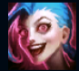
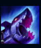
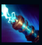
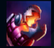
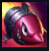

Jinx
| Jinx The Loose Cannon | |
|---|---|
| Release date | 10.10.2013 |
| Class | Marksman |
| Positions | Bottom |
| Resource | Mana |
| Range type | Ranged |
| Adaptive type | Physical |
| Base statistics | |||
| Health | 610 – 2072 | Mana | 245 – 1010 |
| Health regen. | 3.75 – 12.25 |
Mana regen. | 6.7 – 23.7 |
| Armor | 28 – 87.5 | Attack damage | 57 – 114.8 |
| Magic resist. | 30 – 38.5 | Crit. damage | 175% |
| Move. speed | 325 | Attack range | 525 |
Jinx e o răufăcătoare maniacă și impulsivă din Zaun, care sădește haos peste tot în jur fără să-i pese de consecințe. Având la dispoziție un arsenal de arme mortale, reușește să dezlănțuie panica și dezastrul în urma ei cu explozii orbitoare și îngrozitor de zgomotoase. Jinx urăște plictiseala mai mult decât orice și dezlănțuie bucuroasă iadul pe pământ peste tot pe unde trece. |  |
ENTUZIASMEAZĂ-TE! Viteza de mișcare și viteza de atac ale lui Jinx cresc foarte mult de fiecare dată când ucide sau participă la uciderea unui campion sau a unui monstru epic din junglă sau când ajută la distrugerea unei structuri. |
||
|---|---|---|---|---|
 |
SCHIMBĂM FOAIA! Jinx își modifică atacurile de bază comutând între ''Pac-Pac'', mitraliera ei, și ''Bubuilă'', lansatorul de rachete. Atacurile cu ''Pac-Pac'' oferă o viteză de atac mai mare, iar atacurile cu ''Bubuilă'' oferă daune AoE, au raza de acțiune mărită și consumă continuu mană. |
|||
 |
ZAP! Jinx își folosește pistolul electric ''Zapper'' pentru a trage un proiectil care îi provoacă daune primului inamic lovit, îl încetinește și îl dezvăluie. |
|||
|  |
FĂLCI DE FOC! Jinx aruncă o serie de grenade-capcană ce explodează după 5 secunde, incendiind inamicii. ''Fălcile de foc'' vor țintui inamicii care calcă pe ele. |
|||
 |
SUPER MEGA RACHETA MORȚII! Jinx trage cu o super-rachetă care câștigă daune pe măsură ce înaintează. Racheta va exploda la impactul cu un campion inamic, provocându-i daune acestuia și inamicilor din jur, în funcție de viața lor lipsă. |